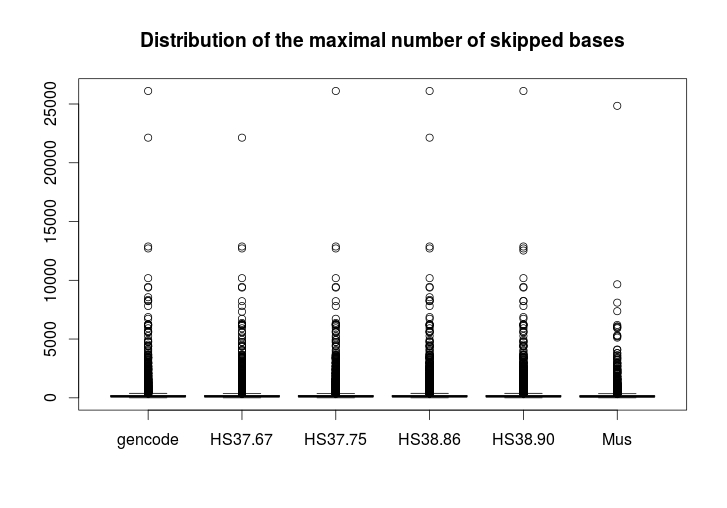
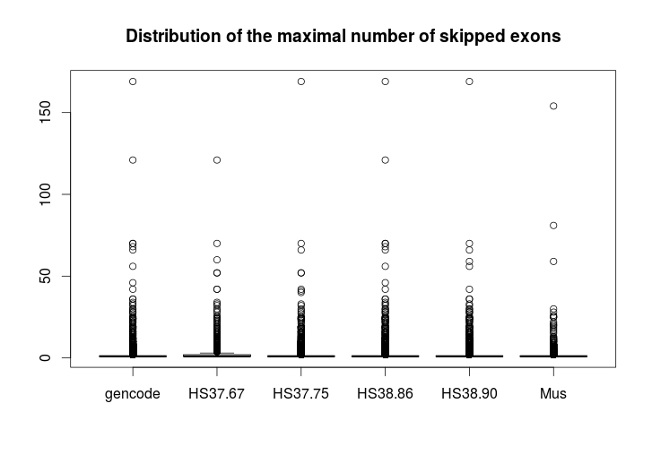

|  |  |
Since there was no exon skipping event in Saccharomyces cerevisiae these results are not included in both plots
The following table lists the genes that skipped the most bases and/or exons. Each individual gene id is only listed once with it's maximal number of skipped bases/exons.
| Top 10 genes that skipped most bases | Top 10 genes that skipped most exons | ||||
|---|---|---|---|---|---|
| Gene ID | Gene Name | Max. Skipped Bases | Gene ID | Gene Name | Max. Skipped Exons |
| ENSG00000155657 | TTN | 26106 | ENSG00000155657 | TTN | 169 |
| ENSMUSG00000051747 | Ttn | 24843 | ENSMUSG00000051747 | Ttn | 154 |
| ENSG00000283186 | TTN | 22134 | ENSG00000283186 | TTN | 121 |
| ENSG00000145113 | MUC4 | 12875 | ENSG00000271425 | NBPF10 | 70 |
| ENSG00000164199 | ADGRV1 | 12530 | ENSG00000187240 | DYNC2H1 | 70 |
| ENSG00000187240 | DYNC2H1 | 10182 | ENSG00000163386 | NBPF10 | 60 |
| ENSMUSG00000075249 | Fsip2 | 9659 | ENSG00000164199 | ADGRV1 | 59 |
| ENSG00000188738 | FSIP2 | 9437 | ENSG00000162825 | NBPF20 | 56 |
| ENSG00000163092 | XIRP2 | 9379 | ENSG00000186275 | NBPF12 | 52 |
| ENSG00000271425 | NBPF10 | 8559 | ENSG00000150995 | ITPR1 | 42 |